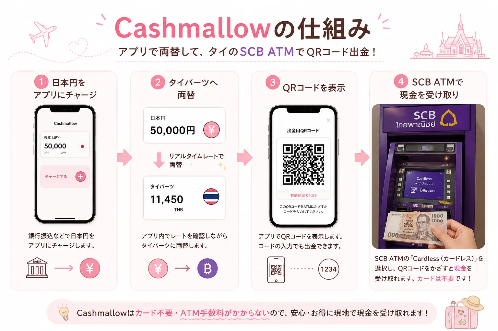
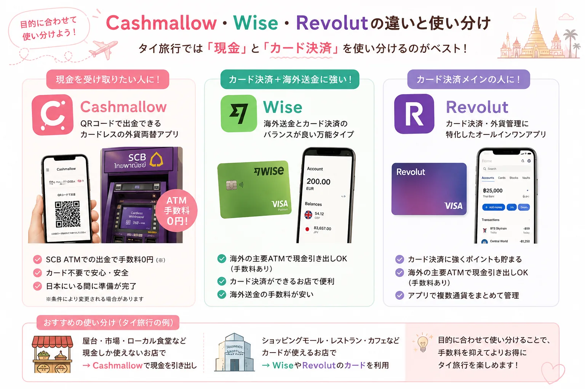

タイ旅行のATM手数料はなぜ高い？
タイ旅行では、屋台やローカル食堂、市場、個人商店など、今でも現金しか使えないお店が数多くあります。そのため「現地のATMからタイバーツを引き出そう」と考えている方も多いはずです。
しかし、海外発行のカードでタイのATMを利用すると、1回あたり220〜250バーツ（約1,000円前後）のATM手数料が発生することがあります。これはカード会社側の手数料とは別に、ATMを設置している銀行側の手数料としてかかるものです。
少額を何度か引き出す旅行スタイルだと、手数料だけで数千円になることもあります。たとえば3回引き出すと、220バーツ×3回で660バーツ前後の負担になります。
Cashmallowとは？
Cashmallow（キャッシュマロウ）は、日本円をアプリにチャージして海外通貨へ両替したあと、現地のATMから現金を受け取れる外貨両替・海外送金アプリです。
一般的な海外ATMではカードを挿入して現金を引き出しますが、Cashmallowはスマートフォンに表示されるQRコードを使って出金する「カードレス出金」の仕組みを採用しています。
タイではSCB（Siam Commercial Bank／サイアム商業銀行、紫色のATM）と提携しており、対応するSCB ATMで現金を受け取れます。カードを持ち歩く必要がないため、盗難・スキミング・ATMへの取り忘れといったリスクを減らせる点も特徴です。
なお、対応国や対応ATMは変更・拡大される可能性があります。渡航前には必ず公式サイトやアプリで最新情報を確認してください。

タイ旅行でCashmallowが注目される理由
Cashmallowが支持される大きな理由は、タイのATMオーナー手数料（220〜250バーツ）を抑えやすい点です。
通常、海外発行のデビットカードやプリペイドカードでタイのATMから現金を引き出すと、引き出し金額の多寡にかかわらず毎回手数料が発生します。頻繁にATMを使う旅行者ほど負担が大きくなります。
Cashmallowは、SCBとの提携によるカードレスQRコード出金という仕組みを利用するため、通常の海外カード出金とは違う形で現金を受け取れます。旅行中に何度か少額ずつ引き出したい人ほど、差を実感しやすいサービスです。
Cashmallowのメリット
タイのATM手数料を実質ゼロにしやすい
海外旅行では為替レートだけでなく、ATM手数料も旅費に響きます。現地で何度か現金を引き出す予定がある人ほど、Cashmallowのメリットを感じやすいでしょう。
カードレスで出金できる
カードをATMに挿入する必要がないため、カードの紛失・盗難、スキミング被害、ATMへのカード取り忘れといったトラブルを避けやすくなります。
日本にいる間に準備できる
アプリ登録、本人確認、日本円のチャージを渡航前に済ませておけば、現地で慌てずに使いやすくなります。
深夜到着でも使いやすい
スワンナプーム国際空港にもSCBのATMが設置されているため、両替所が閉まっている時間帯でも現金を用意しやすいのが実用面での利点です。
Cashmallowのデメリット・注意点
日本出発前の本人確認が必須
本人確認（eKYC）には一定の時間がかかる場合があります。旅行当日ではなく、最低でも数日前までに登録・本人確認を済ませておきましょう。
対応ATMがSCBに限定される
現状、タイで確実に使えるのはSCBの対応ATMです。地方の店舗や特定エリアでは近くにSCB ATMがない場合もあるため、主要な行き先の周辺にATMがあるか確認しておくと安心です。
スマートフォンとインターネット接続が必要
QRコード出金のため、現地でのスマートフォンとネット接続が前提になります。現地SIM・eSIM・ポケットWi-Fiなどの通信手段を事前に準備しておきましょう。
条件は変更される可能性がある
手数料体系や対応国・対応通貨は変更される可能性があります。渡航直前に公式サイトかアプリ内の最新情報を確認しましょう。
Cashmallowの使い方（5ステップ）
| ステップ | やること | ポイント |
|---|---|---|
| STEP1 | アプリをインストール | 公式ストアからダウンロードします。 |
| STEP2 | 会員登録・本人確認 | 旅行直前ではなく数日前までに済ませるのがおすすめです。 |
| STEP3 | 日本円をチャージ | チャージ方法は公式情報で確認しましょう。 |
| STEP4 | タイバーツへ両替 | アプリ内でレートを確認しながら両替します。 |
| STEP5 | SCB ATMでQRコード出金 | Cardlessを選び、QRコードを使って現金を受け取ります。 |
Wise・Revolutとの違い

| 比較項目 | Cashmallow | Wise | Revolut |
|---|---|---|---|
| QRコード出金 | 対応 | 非対応 | 非対応 |
| 利用可能ATM | SCB対応ATM中心 | 海外の主要ATM全般 | 海外の主要ATM全般 |
| カード不要 | 対応 | デビットカードが必要 | デビットカードが必要 |
| 店舗でのカード決済 | 現金受け取り向き | 使いやすい | 使いやすい |
| 向いている人 | 現金を受け取りたい人 | カード決済や海外送金も使いたい人 | カード決済と外貨管理をしたい人 |
現地で現金を受け取りたいならCashmallow、カード決済を中心に使いたいならWiseやRevolutという使い分けが基本です。屋台や市場ではCashmallowで下ろした現金、ショッピングモールやレストランではWise・Revolutのカード払い、という二刀流も現実的です。
Cashmallowがおすすめな人・渡航前チェックリスト
おすすめな人
- タイ旅行が初めてで、現地ATMの操作に不安がある人
- ATM手数料をできるだけ抑えたい人
- 現地で現金を引き出す予定が複数回ある人
- カードを持ち歩きたくない人
- 深夜便でタイへ到着する人
渡航前チェックリスト
- 本人確認（eKYC）は完了しているか
- アプリへ正常にログインできるか
- スマートフォンの充電・バッテリー残量は十分か
- 現地SIM・eSIMなど通信手段を準備したか
- 行き先周辺のSCB ATMの場所を事前に調べたか
よくある質問（FAQ）
Cashmallowは日本人でも利用できますか？
はい、日本在住の方も利用できます。利用前に本人確認を済ませておきましょう。
タイのどのATMでも利用できますか？
現状はSCB（サイアム商業銀行）の対応ATMで利用できます。渡航前に対応ATMを確認してください。
カードは必要ですか？
不要です。スマートフォンに表示されるQRコードを使ってカードレス出金できます。
ATM利用手数料は本当に無料になりますか？
SCBの対応ATMでCashmallowのカードレス出金を利用する場合、通常発生するATMオーナー手数料を抑えやすい仕組みです。ただし条件や仕様は変更される可能性があるため、最新情報は公式サイトで確認してください。
Wiseとどちらがおすすめですか？
現金を受け取りたい人はCashmallow、店舗でのカード決済や海外送金も重視する人はWiseが向いています。
まとめ
タイ旅行では、屋台やローカル市場など現金しか使えない場面がまだ多く残っています。一方で、海外発行カードでのATM出金には220〜250バーツ前後の手数料が発生するのが実情です。
Cashmallowは、日本円をアプリ内でタイバーツに両替し、SCBのATMでQRコードを使って現金を受け取れるサービスです。カードレスのため、カード紛失やスキミング対策としても注目されています。
渡航前に本人確認とアプリ登録を済ませておけば、現地でもスムーズに現金を用意しやすくなります。出発直前には、公式サイトやアプリで最新の対応ATM・手数料条件を確認しましょう。